Jae Shin Yoon (윤재신) |
I am a Research Scientist at Adobe Research.
I received Ph.D. degree in Computer Science and Engineering at the University of Minnesota (UMN), Twin Cities, advised by Prof. Hyun Soo Park. I received MS degree in Department of Robotics from Korea Advanced Institute of Science and Technology (KAIST) under the supervision of Prof. In So Kweon. I received my bachelor degree in Electrical Engineering from Hanyang University under the supervision of Prof. Yong Ho Song. I was an exchange student at Kobe University. My general research interest lies in computer&robot vision and machine learning.
Email: jaeyoon [at] adobe.com, jsyoon4325 [at] gmail.com
CV [07/10/2022] |
Google Scholar |
Human Behavioral Imaging Dataset
University Collaboration: I am open to research collaboration. Please contact me if you are interested in.
Research Highlight
| Project MotionMix (Max Sneak 2022) | Motion Dependent Appearance from a Single Camera (CVPR 2022) [Project page] | Human Animation from a Single Image (CVPR 2021) |
| Dynamic Scenes Novel View Synthesis (CVPR 2020) | HUMBI: A Large Multiview Human Behavioral Imaging Dataset (CVPR 2020) [Project page] |
Monocular 3D Face Performance Tracking (CVPR 2019) [Project page] |
Publications

|
3D Reconstruction of Interacting Multi-Person in Clothing from a Single ImageJunuk Cha, Hansol Lee, Jaewon Kim, Bao Truong, { Jae Shin Yoon*, Seungryul Baek* }*indicates joint last authors IEEE Winter Conf. on Applications of Computer Vision (WACV) 2024 [PDF] [Video] [Project Page] |
| 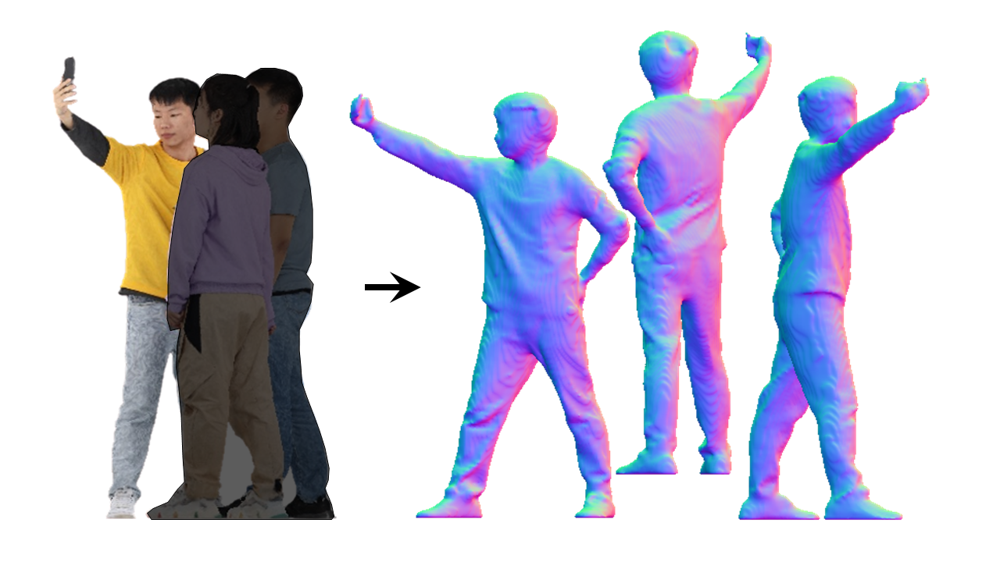 | Complete 3D Human Reconstruction from a Single Incomplete ImageJunying Wang, Jae Shin Yoon, Tuanfeng Y. Wang, Krishna Kumar Singh, and Ulrich NeumannIEEE Computer Vision and Pattern Recognition (CVPR) 2023 [PDF] [Video] [Project page] |
| 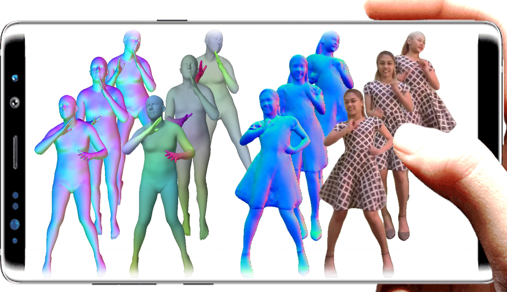 | Metaverse in the Wild: Modeling, Adapting, and Rendering of 3D Human Avatars from a Single CameraJae Shin YoonPhD Thesis, Computer Science and Engineering, University of Minnesota 2022 [PDF] |
| 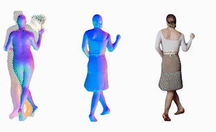 | Learning Motion-Dependent Appearance for High-Fidelity Rendering of Dynamic Humans from a Single CameraJae Shin Yoon, Duygu Ceylan, Tuanfeng Y. Wang, Jingwan (Cynthia) Lu, Jimei Yang, Zhixin Shu, and Hyun Soo ParkIEEE Computer Vision and Pattern Recognition (CVPR) 2022 [PDF] [Video] [Project page] [Article] [BibTeX] |

|
HUMBI: A Large Multiview Dataset of Human Body Expressions and Benchmark ChallengeJae Shin Yoon, Zhixuan Yu, Jaesik Park, and Hyun Soo ParkIEEE Transactions on Pattern Analysis and Machine Intelligence (TPAMI) Journal [PDF] (Extended version of CVPR 20) [Dataset Page] [BibTeX] |

|
Pose-Guided Human Animation from a Single Image in the WildJae Shin Yoon, Lingjie Liu, Vladislav Golyanik, Kripasindhu Sarkar, Hyun Soo Park, and Christian TheobaltIEEE Computer Vision and Pattern Recognition (CVPR) 2021 [PDF] [Video] [Project page] [Code] [Poster] [5-min video] |

|
Novel View Synthesis of Dynamic Scenes with Globally Coherent Depths from a Monocular CameraJae Shin Yoon, Kihwan Kim, Orazio Gallo, Hyun Soo Park, and Jan KautzIEEE Computer Vision and Pattern Recognition (CVPR) 2020 [PDF] [PDF_supple] [Video] [Video_supple] [Project Page] |
|
|
HUMBI: A Large Multiview Dataset of Human Body Expressions{Zhixuan Yu*, Jae Shin Yoon*}, In Kyu Lee, Prashanth Venkatesh, Jaesik Park, Jihun Yu, and Hyun Soo Park*indicates joint first authors IEEE Computer Vision and Pattern Recognition (CVPR) 2020 [PDF] [Video] [Project Page] |

|
Self-Supervised Adaptation of High-Fidelity Face Models for Monocular Performance TrackingJae Shin Yoon, Takaaki Shiratori, Shoou-I Yu, and Hyun Soo ParkIEEE Computer Vision and Pattern Recognition (CVPR) 2019 Oral presentation [PDF] [Supple] [Video] [Project Page] [Poster] |

|
3D Semantic Trajectory Reconstruction from 3D Pixel ContinuumJae Shin Yoon, Ziwei Li, Hyun Soo ParkIEEE Computer Vision and Pattern Recognition (CVPR) 2018 [PDF] [Video] [Project Page] |
| 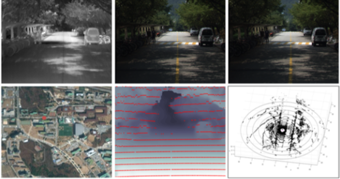 | KAIST Multi-spectral Day/Night Dataset for Autonomous and Assisted DrivingYukyung Choi, Namil Kim, Soonmin Hwang, Kibaek Park, Jae Shin Yoon, Kyounghwan An, and In So KweonTransactions on Intelligent Transportation Systems (T-ITS) [PDF] [Project Page] |
| 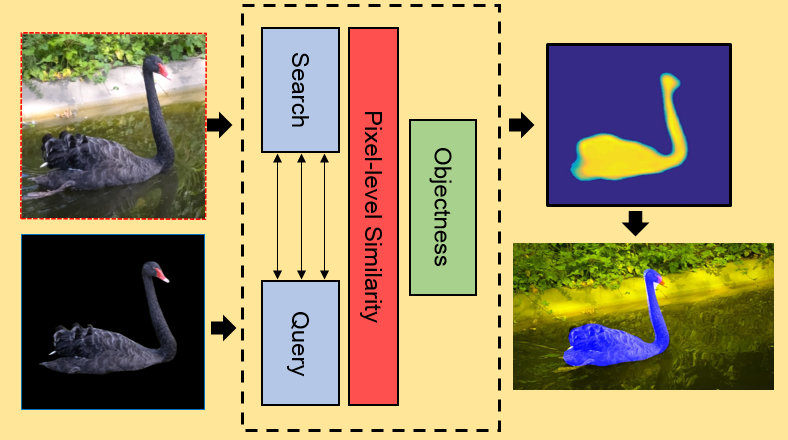 | Pixel-level Matching for Video Object Segmentation using Convolutional Neural NetworksJae Shin Yoon, Francois Rameau, Junsik Kim, Seokju Lee, Seunghak Shin, and In So KweonIEEE International Conference on Computer Vision (ICCV) 2017 [PDF] [Project Page] [Slide] [Poster] |
| 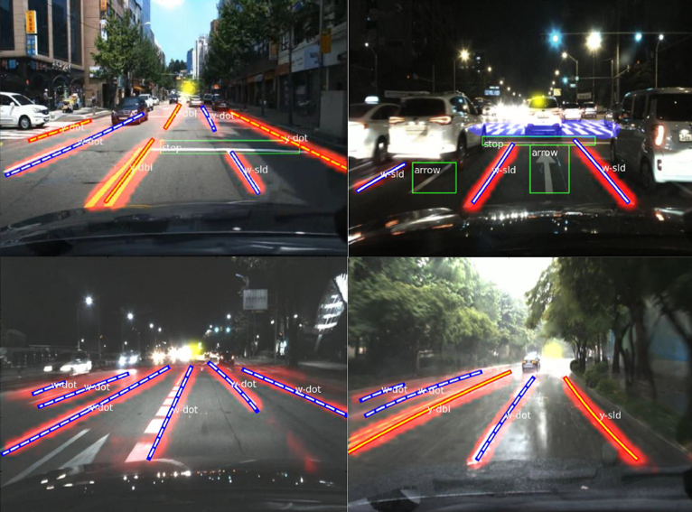 | VPGNet: Vanishing Point Guided Network for Lane and Road Marking Detection and RecognitionSeokju Lee, Junsik Km, Jae Shin Yoon, Seunghak Shin, Oleksandr Bailo, Namil Kim, Tae-hee Lee, Hyun Seok Hong, Seung-Hoon Han, In So KweonIEEE International Conference on Computer Vision (ICCV) 2017 [PDF] [Project Page] |
| 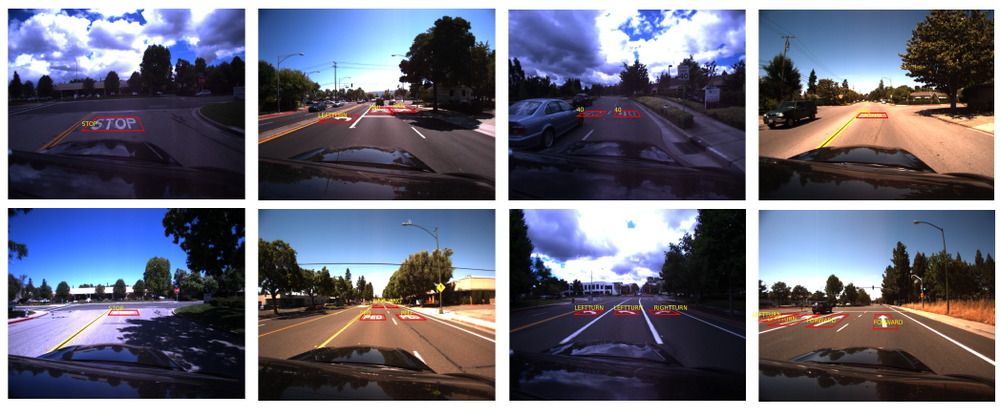 | Robust Road Marking Detection and Recognition Using Density-Based Grouping and Machine Learning TechniquesOleksandr Bailo, Seokju Lee, Francois Rameau, Jae Shin Yoon, In So KweonIEEE Winter Conference on Application and Computer Vision (WACV) 2017 [PDF] |
| 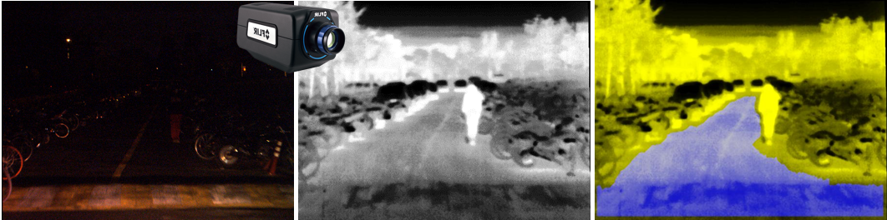 | Thermal-Infrared based Drivable Region DetectionJae Shin Yoon, Kibaek Park, Soonmin Hwang, Namil Kim, Yukyung Choi, Francois Rameau and In So KweonIEEE Intelligent Vehicle Symposium (IV) 2016 [PDF] [Project Page] [Dataset] |
| 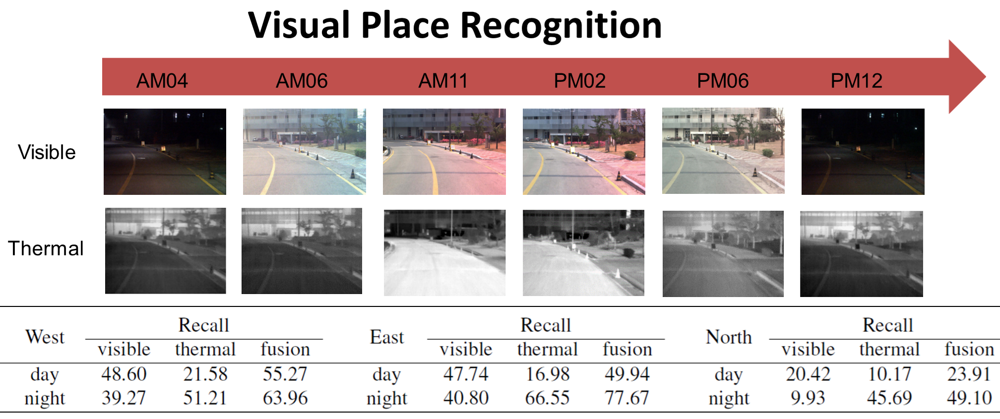 | All-Day Visual Place Recognition: Benchmark Dataset and BaselineYukyung Choi, Namil Kim, Kibak Park, Soonmin Hwang, Jae Shin Yoon,In So KweonIEEE Computer Vision and Pattern Recognition Workshop 2015 on Visual Place Recognition in Changing Environments (CVPR-VPRICE) 2015 [PDF] [Project Page] |
| 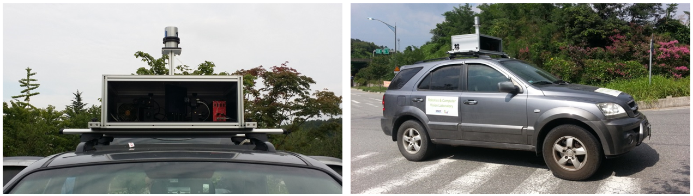 | Low-Cost Synchronization for Multispectral CamerasYukyung Choi, Namil Kim, Kibak Park, Soonmin Hwang, Jae Shin Yoon, In So KweonIEEE International Conference on Ubiquitous Robots and Ambient Intelligence (URAI) 2015 [PDF] |
| 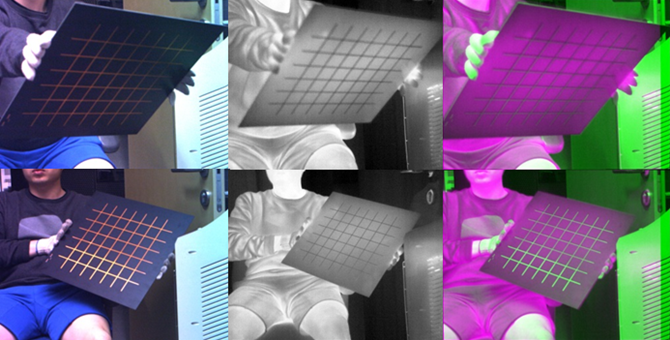 | Geometrical calibration of multispectral calibrationNamil Kim, Yukyung Choi, Soonmin Hwang, Kibaek Park, Jae Shin Yoon, In So KweonIEEE International Conference on Ubiquitous Robots and Ambient Intelligence [PDF] |
Technical Report | |
| 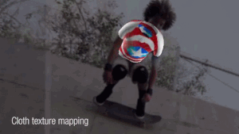 | Neural 3D Clothes Retargeting from a Single ImageJae Shin Yoon, Kihwan Kim, Jan Kautz, and Hyun Soo ParkTechnical Report 2021 [PDF] |
Dataset
- - Multiview images captured from 107 synchronized cameras
- - 3D gaze, face, hand, body, clothing of 772 subjects
- - 13 Dynamic scenes captured from synchronized 12 multi-views and cell-phone camera
- - Ground-truth for dynamic scene view synthesis and depth estimation
- - Ground-truth for classification, detection and segmentation of lanes, road markings, traffic signs, and vanishing point
- - A variety of driving scene images captured from day and night in sunny, cloudy, and rainy days
- - Driving scene dataset of the calibrated stereo-vision, thermal camera, velodyne, gps, imu
- - Large-scale day and night multi-sensor dataset
- - Synchronized and aligned thermal-rgb imaging dataset for road segmentation
- - 5941 thermal-rgb image pairs with road mask annotation
Research Internship
with Dr. Duygu Ceylan, Dr. Tuanfeng Y. Wang, Dr. Jingwan (Cynthia) Lu, Dr. Jimei Yang, Dr. Zhixin Shu
with Prof. Christian Theobalt, Dr. Lingjie Liu, Dr. Vladislav Golyanik, Dr. Kripasindhu Sarkar
with Dr. Kihwan Kim, Dr. Orazio Gallo, Dr. Jan Kautz
with Dr. Takaaki Shiratori, Dr. Shoou-I Yu
with Dr. Hwasup Lim, Dr. Sang Chul Ahn
Invited Talk
- - Adobe Max Sneak [Link] | 2022
- - Adobe Research (job talk), hosted by Dr. Cynthia Lu | 2022
- - DGIST, AI Colloquium, hosted by Prof. Sunghoon Im | 2022
- - UST, Global Mentoring Conference, hosted by Prof. SangChul Ahn | 2023
- - CVPR Tutorial on Novel View Synthesis: From Depth-Based Warping to Multi-Plane Images and Beyond [Link, Slide] | 2020
- - CVPR Workshop on 3D Scene Understanding for Vision, Graphics, and Robotics (Oral Presentation) [Link] | 2020
- - CVPR oral presentation [Video] | 2019
- - Think Tank Team at Samsung Research America in Mountain View, hosted by Dr. Abhijit Bendale | 2019
- - UofM 50th Anniversary Research Showcase (Poster) | 2019
- - University of Minnesota (UMN) Graduate Research and Discussion Seminars (GRaDS) | 2019
- - Seoul National Univeristy (SNU) Vision Seminar, hosted by Prof. Bohyung Han | 2019
- - Pohang University of Science and Technology (POSTECH) Computer Vision group, hosted by Prof. Minsu Cho | 2019
- - Korea Institute of Science and Technology (KIST), hosted by Dr. Hwasup Lim | 2019
- - Amazon Graduate Research Symposium (poster) | 2019
- - University of Minnesota (UMN) VCAI Seminar | 2018
- - Hyundai Top Talent Forum | 2018
Honors & Awards
Patent
- Application date: Oct. 31, 2016 (US Provisional Application 52/414,951)